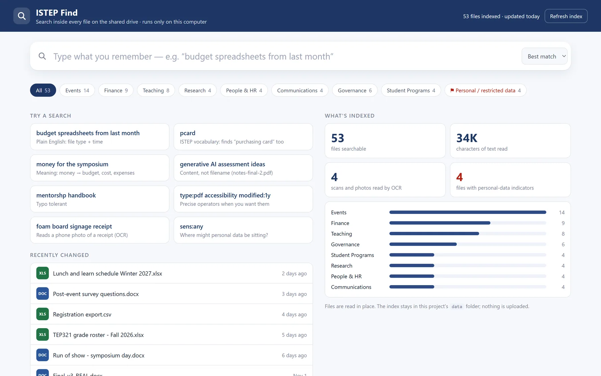
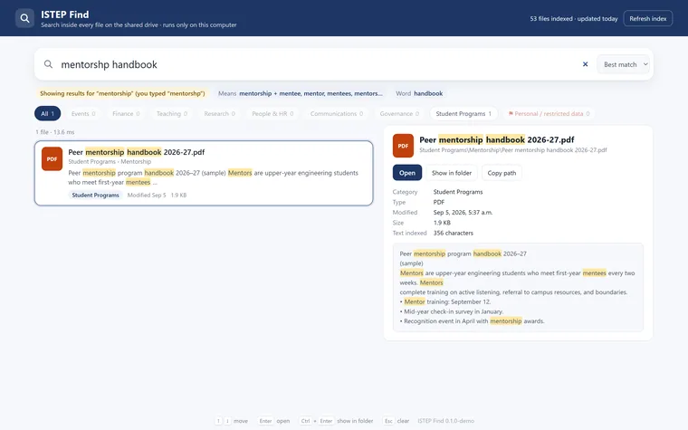
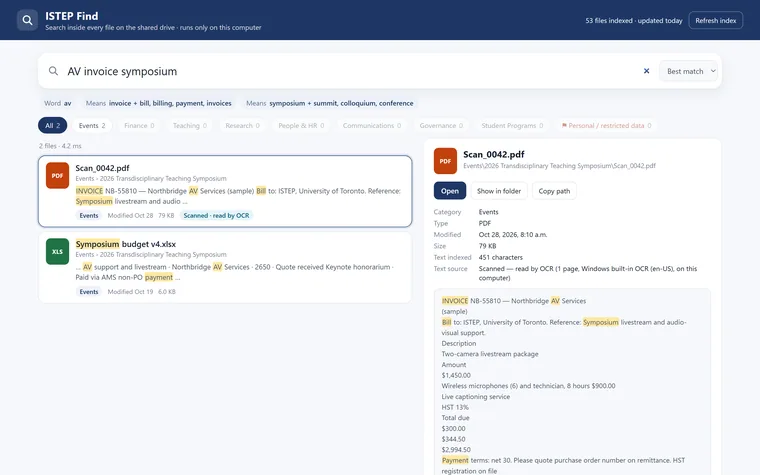
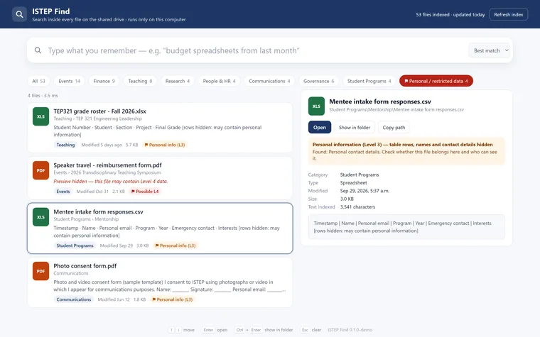
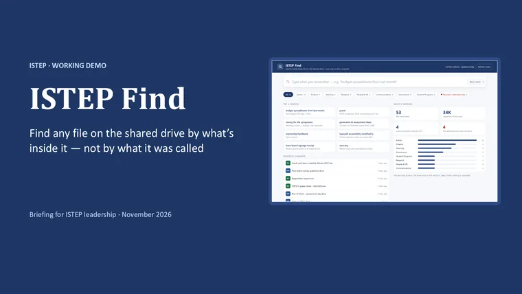
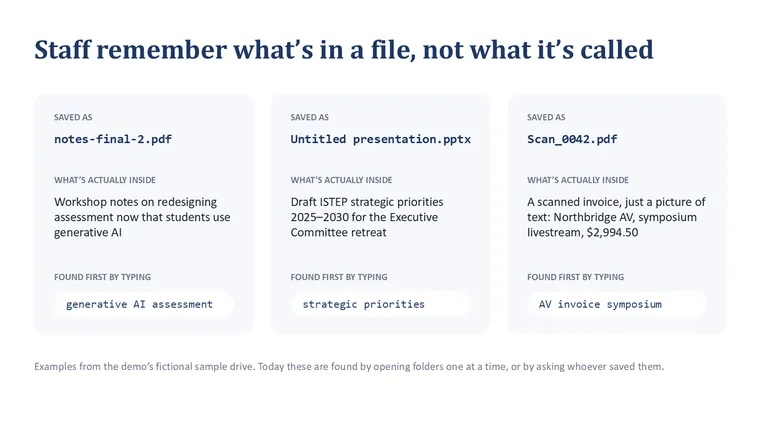
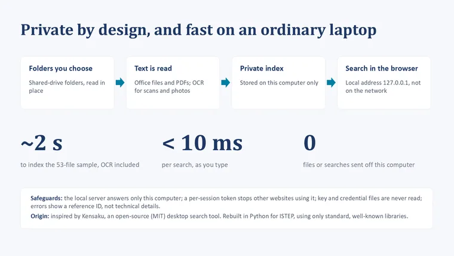
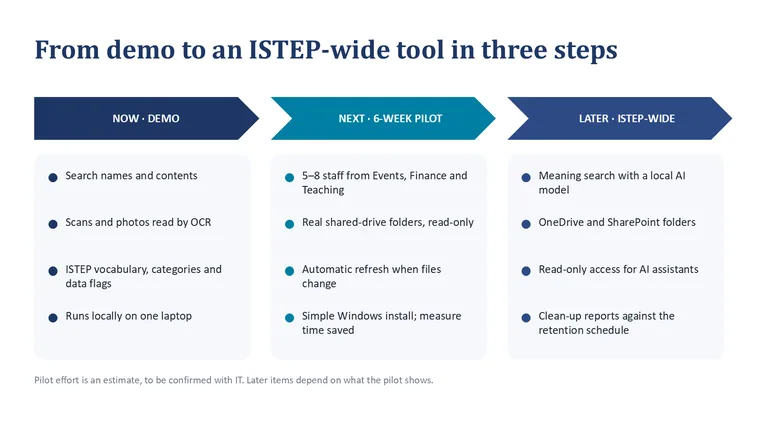

ISTEP Find
Find any file on the shared drive by what is in it, in seconds, without anything leaving your computer.


Result
- 11 of 11demo searches on a 53-file sample found the right file first
- 43automated tests
- 2 sto index the 53-file sample, OCR included
The ask is a six-week pilot with 5 to 8 staff, read-only, after an Information Risk Assessment.
The problem and what I built
Staff remember what a file says, not what it was called: notes-final-2.pdf, Scan_0042.pdf, copy of copy of budget (2).xlsx. Windows search can't read scans, and it doesn't know ISTEP's words.
A local search app that reads every file, scans included. It turns "budget spreadsheets from last month" into filters, expands ISTEP's own vocabulary, flags personal data against U of T's data levels, and also searches synced OneDrive folders and your own Outlook mail.
Full detailsHow it works, the full feature list, decisions, numbers and next steps
Tools
- Python 3.11 with SQLite FTS5 (BM25 ranking)
- PyMuPDF, python-docx, python-pptx, openpyxl
- Windows built-in OCR (WinRT)
- Outlook through COM
- Vanilla JS on a local web server
A prompt to review, not a classification decision.
The problem
Staff remember what a file says, not what it was called: notes-final-2.pdf, Scan_0042.pdf, copy of copy of budget (2).xlsx, Untitled presentation.pptx. Windows search can't read scans, and it doesn't know ISTEP's words.
What I built
- Natural-language filters. "budget spreadsheets from last month" becomes chips: When: last month, Type: Spreadsheets, Means: budget + cost, money. The parser handles phrases like "last N weeks", "since March", "in 2025", "recently" and type words.
- "Meaning" search without AI. A curated, editable vocabulary of 45 concept groups (P-card and purchasing card, ISTEP program names, union locals, systems). Every expansion is shown as a chip, so the results are explainable. An embedding model could be added later.
- Search as you type. The last word is prefix-matched. Typo fixes ("mentorshp" to "mentorship") are suggested only when the corrected word actually finds something.
- OCR in the background after indexing, so search works straight away. Scanned PDFs and phone photos are rotated and upscaled; sideways or upside-down scans are detected by a real-word score and retried at each rotation; and results carry a "Scanned, read by OCR" badge.
- Sensitive-data flags mapped to U of T's data levels. Level 4 signs: a SIN with a checksum, banking details, passport and card numbers (with a Luhn check), health information and passwords. Level 3 signs: student numbers, dates of birth, home addresses and grades. Labels count only when they're used as a form field or column header, so guidance text that just mentions SINs isn't flagged. Level 4 previews are hidden, Level 3 shows headings only, values are masked, and so are the senders of flagged emails. It's presented as "a prompt to review, not a classification decision".
- Eight ISTEP categories and a full set of search operators (
type:,in:,modified:,sens:,is:scanned,source:,from:and more). - More sources (Nov 9): OneDrive and SharePoint through synced folders, with no sign-in needed; "online-only" files are listed but never downloaded; and Outlook, for your own mailbox over the last 12 months, including the text inside attachments.
How it works
How ISTEP Find works, step by step:
- Folders you choose: Shared drive, synced OneDrive, your mailbox
- Text is read: Office files and PDFs; OCR for scans and photos
- A private index: SQLite FTS5, stored on this computer only
- Search in the browser: Local address 127.0.0.1, with a per-launch token
- Ranking: BM25 with weights (file name 10, folder 3, body 1), a recency boost, a bonus for query words that appear in the file name, and a fall-back to "any word", with a note, when nothing matches every word.
- Text extraction: PyMuPDF, python-docx, python-pptx and openpyxl, with Windows' built-in OCR for images and scans.
- It was inspired by Kensaku, an open-source (MIT) desktop search tool, and rebuilt in Python for ISTEP with standard, well-known libraries.
Key decisions
- Local and locked down. It binds to 127.0.0.1 only; a random per-launch token is required on every request; it has a strict Content-Security-Policy; only indexed files can be opened; credential files are never read; and errors are generic, with a correlation ID.
- A trade-off, stated in the README. The index stores full text, including flagged files. That's why an Information Risk Assessment and an encrypted computer are required before it's used on real data.
- Demo engineering. A synthetic 53-file "ISTEP Shared Drive" with back-dated files, so "last month" works on presentation day; separate index folders, so real mail never appears in a demo; and a pre-flight checker that runs every demo step and prints "Demo ready."
The pitch kit
- a 10-slide leadership deck with speaker notes
- a one-page proposal
- a presenter run sheet
The ask: a six-week pilot with 5 to 8 staff on 2 or 3 folders, read-only, after a risk assessment. Success is measured as the time to find a known file, the right file in the top 5, personal-data files tidied up, and whether staff keep using it.
Results and status
- A working demo and a pitch kit.
- 11 of 11 demo searches on a 53-file sample found the right file first. Searches take a few milliseconds, and the sample indexes, OCR included, in about 2 seconds.
- About 2,740 lines of Python in 13 modules, about 50 file types recognized, and 43 automated tests.
What I'd do next
- Run the six-week pilot, after the Information Risk Assessment.
- Add automatic refresh when files change, and a simple Windows install.
- Later: meaning search with a local AI model, and read-only access for AI assistants.
Gallery
Every screenshot uses the synthetic sample drive. All file names, people, vendors and figures in it are fictional.

Typo fixes are offered only when the corrected word actually finds something. 
A scanned invoice found by what it says. Every name and figure is fictional. 
Sensitive-data flags mapped to U of T's data levels: a prompt to review, not a classification decision. 
The 10-slide leadership deck. 
The problem, in three file names. 
The safeguards, in one slide. 
The roadmap from demo to pilot.